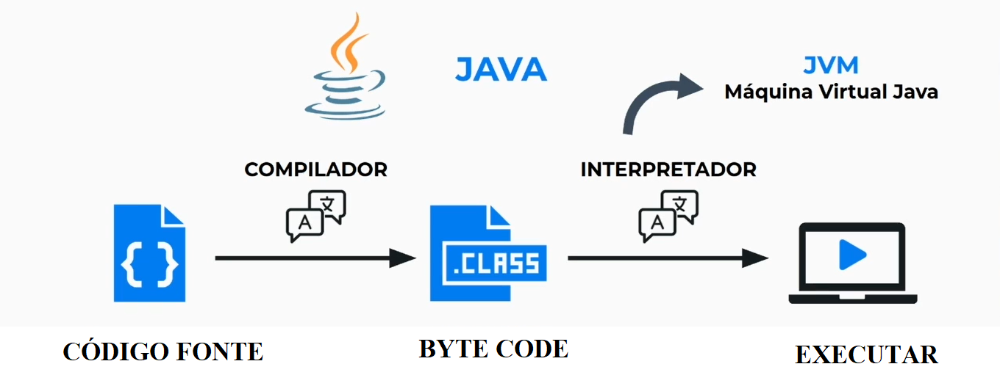
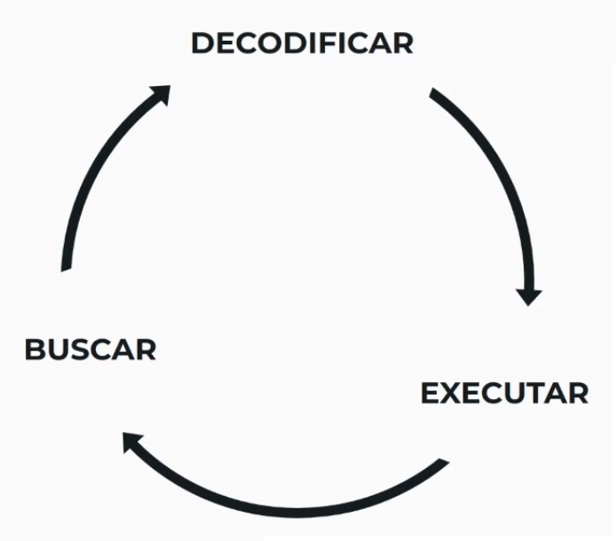
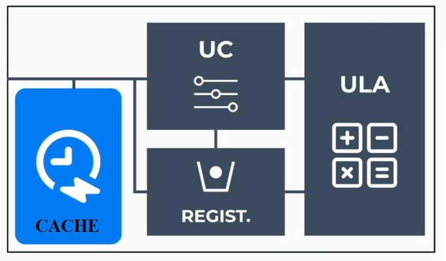

Bit(Binary Digit - Dígito Binário): é a menor unidade possível para armazenamento (0, 1). É representado por "b"
Byte: grupo de 8 bits. Representado por "B"
1 B = 8b
Compilador: O arquivo é traduzido por completo para depois executar.
Interpretador: Cada trecho de código é traduzido e enviado para executar. Similar a uma tradução em tempo real.
Compiladores
Interpretadores
Compilação just-in-time: é a compilação de um programa em tempo de execução.
Caso Específico para o Java
- HD (Hard Disc ou Disco Rígido): Possui discos magnéticos e uma agulha.
Vantagens: grande capacidade de armazenamento, barato.
Desvantagens: lento, frágil.
- SSD (Solid State Drive ou Unidade de Estado Sólido): Possui chips eletrônicos.
Vantagens: menor, rápido, resistente.
Desvantagens: preço, limitação de escrita.
RAM (Random Access Memory ou Memória de Acesso):Mesmo tempo para ler os dados em diferentes endereços.
Guarda os dados que estamos trabalhando. É volátil, ou seja, quando o computador é desligado os dados são apagados.
É um tipo de memória não volátil com baixo armazenamento. Quando o computador é ligado as primeiras informações que ele irá buscar estarão na ROM como a BIOS. Essa memória ajuda a identificar os dispositivos conectados (HD) e carrega o Sistema Operacional.
UC (Unidade de Controle): Recebe os dados da memória RAM.
ULA (Unidade Lógica Aritmética): Realiza operações aritméticas.
Registrador: É responsável pela memória do processador. Guarda a instrução atual, a posição da instrução atual, valores intermediários, etc.
As instruções são processadas num ciclo de três passos: buscar, decodificar, executar. Antes de serem executadas as instruções são decodificadas pela Unidade de Controle (UC).
Pipeline de instruções: Instruções são executadas a cada ciclo.
Entrada: teclado, mouse, webcan, microfone.
Saída: Monitor, fone de ouvido, impressora.
Entrada e saída: HD.
Drivers de dispositivos: permitem que escrevamos o mesmo código para dispositivos diferentes.
Placas de vídeo (GPU): faz os cálculos necessários para atualizar os pixels na tela. Hoje em dia elas vem juntas com o chip do processador (placa de vídeo integrada).
Multitasking: computador executa vários programas ao mesmo tempo.
DRAM (Dynamic RAM ou RAM Dinâmica): mais lenta, mais barata em comparação com a SRAM.
SRAM (Static RAM ou RAM Estática): mais rápida porém mais cara.
Localidade temporal: Acessar de novo em breve.
Localidade espacial:Acessar o dado vizinho em breve.
Ponteiros: valores que apontam para outros valores da memória.
Passagem por valor: permite usar dentro de uma função uma cópia do valor de uma variável, porém não permite alterar o valor da variável original (somente a cópia pode ser alterada).
Passagem por referência: é passada para a função uma referência da variável, sendo possível alterar o conteúdo da variável original usando-se esta referência.